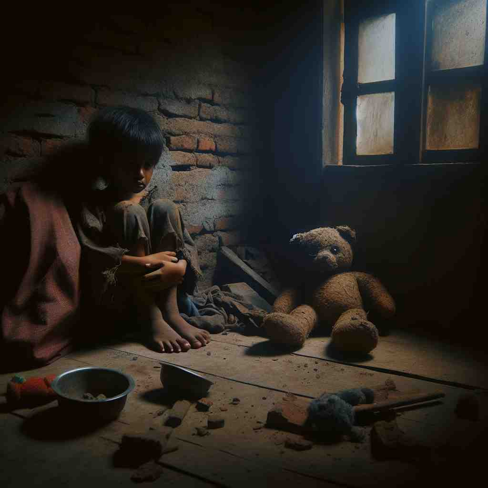

💬 It is wrong to maltreat an animal for any reason.

💬 It is wrong to maltreat a child and make them feel sad.
🗝️ v. to treat someone cruelly or violently
🖼️ 在一个偏僻的街角，一群不良少年对一个孤单的行人恶言相向，并故意推搡，展现了'maltreat'作为残酷或暴力对待某人的含义。
🔍 记住'maltreat'的关键在于理解'mal-'前缀表示'坏的、错误的'，而'treat'意为'对待'。因此，'maltreat'就是'错误地对待'或'虐待'。无论是对人、动物还是物品，只要是不当或残酷的对待，都可以用这个词。想象一个人粗暴地对待某物或某人，这个画面可以帮助你记住这个词的各种用法。
💬 It is wrong to maltreat an animal for any reason.
💬 It is wrong to maltreat a child and make them feel sad.
🌳 由前缀 'mal-' （不良的，错误的）加上动词 'treat' （对待）组成，表示 '虐待' 或 '不当对待'。
💡 记忆 'maltreat' 时，可以将 'mal-' 与 'bad' 联系起来，加上 'treat'，联想到不良的对待方式，从而记住 '虐待' 的意思。
🗝️ v. to handle or manage badly
🖼️ 在一个小企业的会议室里，老板因为某个项目的失败而大发雷霆。他指责经理对资源和人力的'maltreat'导致了公司的损失，这里'maltreat'表现为对管理或经营的不当处理。
💬 The delicate artifacts were maltreated during transportation, resulting in significant damage.
❓ 从对人的不当对待扩展到对事物的不当处理
🗝️ v. to abuse verbally or psychologically
🖼️ 在一个家庭聚会上，父亲不停地贬低孩子，无视孩子的感受，孩子明显感到沮丧和无措。这一幕展示了'maltreat'作为言语或心理虐待的含义。
💬 The employee claimed he was maltreated by his supervisor through constant criticism and intimidation.
❓ 从身体虐待扩展到言语和心理上的虐待